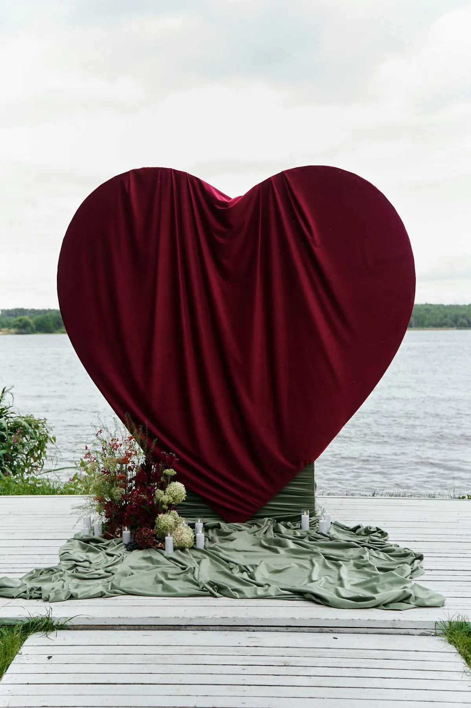
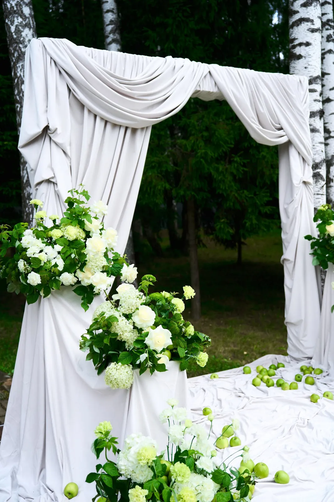
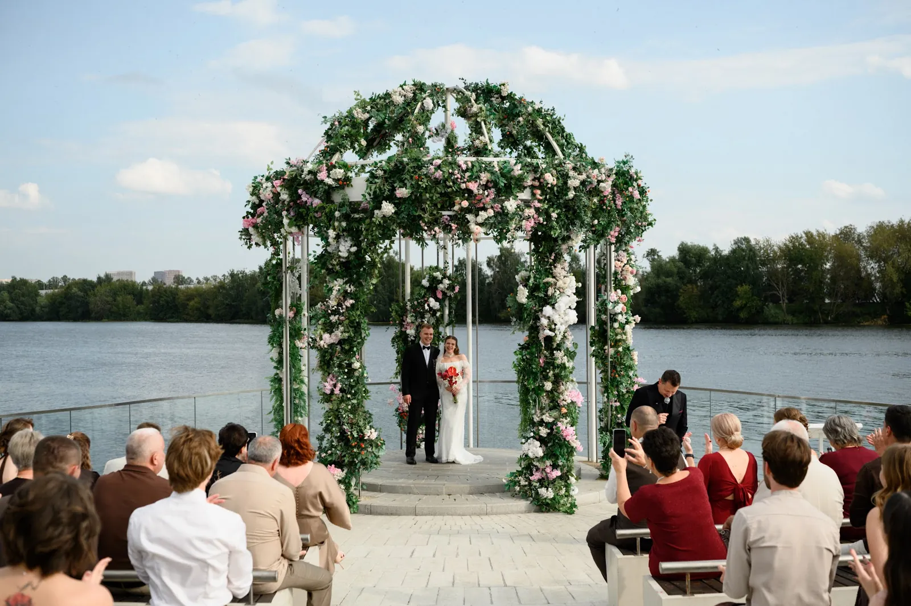

Арка — центр выездной церемонии: на её фоне вы говорите «да», и именно она остаётся на главных фотографиях дня. Показываем на наших свадьбах, какими бывают арки, из чего их собирают и как выбрать форму под площадку и стиль.
Формы арок
Прямоугольная (П-образная) — классика: строгая рамка, которая хорошо работает и с драпировкой, и с цветами.
Круглая — мягкая форма, отлично смотрится с цветами по всему кругу или частично, по диагонали.
Асимметричная композиция — без рамки: две напольные композиции по сторонам или «облако» цветов, которое уходит вверх с одной стороны. Выглядит современно и легко.
Арка-объект — форма, которая сама становится идеей церемонии: например, сердце, буквы или скульптурная конструкция.


Из чего собирают арку
- Драпировка — шёлк, шифон, плотный текстиль. Даёт объём и мягкость, хорошо держит форму на ветру при правильном креплении.
- Живые цветы — главный акцент. Количество цветов сильнее всего влияет на смету.
- Зелень — эвкалипт, папоротник, рускус, ветки. Делает композицию естественной и снижает стоимость без потери объёма.
- Детали — жемчуг, ленты, свечи, светильники, если церемония вечером.
Часто сочетают материалы: драпировка задаёт форму, цветы и зелень — акценты.


Как выбрать арку под площадку
Смотрите на фон: у воды и в открытом поле арка должна быть выше и плотнее, иначе потеряется в пространстве. В саду или у красивого фасада, наоборот, хватит лёгкой рамки, чтобы не перекрыть вид. Учитывайте и солнце: если церемония днём, развернуть арку так, чтобы свет не бил в глаза паре и гостям.
Цвет подбирают к общей палитре свадьбы: арка должна быть продолжением зала, а не отдельным объектом.

Погода и ветер
На выездной церемонии всегда нужен план Б: место под навесом или в зале, куда можно быстро перенести арку. Конструкцию утяжеляют и крепят, лёгкую драпировку фиксируют, чтобы ветер не сорвал её во время клятв. Живые цветы в жару ставят в последний момент и подпитывают водой.
Совет: обсудите с декоратором время монтажа — арку собирают за несколько часов до церемонии, и площадке нужно выделить это окно.
Что делать с аркой после церемонии
Арку часто переносят в зал — она становится фоном для президиума или фотозоной для гостей. Так одна конструкция работает весь вечер, а бюджет расходуется разумнее.
Мы собираем арки для выездных церемоний в Москве и Подмосковье — от лёгких асимметричных композиций до больших конструкций из драпировки и цветов. Расскажите о площадке и дате — предложим форму и посчитаем смету.

Частые вопросы
Сколько времени нужно на монтаж арки?
Обычно несколько часов в день церемонии — зависит от размера конструкции и количества цветов.
Можно ли использовать арку после церемонии?
Да, её часто переносят в зал как фон президиума или фотозону.
Что делать, если пойдёт дождь?
Заранее согласовать с площадкой запасное место под крышей и время на перенос конструкции.
Живые цветы на арке не завянут в жару?
Цветы ставят как можно ближе ко времени церемонии и обеспечивают им воду; для жаркой погоды подбирают стойкие сорта.